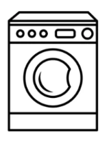

Énoncés des travaux, énoncés des besoins et descriptions
Cet outil de travail sert de mise à jour concernant les énoncés des travaux, les énoncés des besoins et les descriptions qu’ils contiennent.
Énoncés des travaux et énoncés des besoins
Un énoncé des travaux (EDT) décrit les travaux requis en des termes clairs, concis et explicites. Il comprend les produits livrables ou les services ou travaux requis pour exécuter le contrat.
Un énoncé des besoins (EDB) est une description du besoin sans préciser la méthode exacte à utiliser.
L’énoncé des travaux et l’énoncé des besoins définissent tous deux le problème en cause et comprennent des renseignements qui fourniront un contexte à l’autorité approbatrice. Ils contiennent également une évaluation initiale du risque et des informations financières de base concernant ce qui sera produit à l’étape suivante.
Descriptions
Une norme de conception est une description détaillée de l’article à acheter. Elle peut comprendre les dessins et les dimensions, tailles et mesures requises, les matériaux, les propriétés physiques, les résultats des tests de qualité, les considérations environnementales, ergonomiques et esthétiques, les besoins prévus en matière de réparation et d’entretien, le niveau de qualité à atteindre, les normes de sécurité à respecter, etc. Il s’agit du « contenu » de l’article que vous achetez.
Les risques associés à l’utilisation des normes de conception sont les suivants : plus les normes sont détaillées, plus les gestionnaires assument la responsabilité de l’exactitude de la conception, ainsi que de toute erreur, omission ou déficience de conception. Par exemple, si un entrepreneur construit un bateau exactement selon le plan de conception et que celui-ci coule lors de sa mise à l’eau, ce n’est pas la faute du constructeur.
| Exemple de norme de conception pour une vidéo |
|---|
|
Le contenu doit être conforme aux politiques, aux directives et aux lignes directrices, telles que :
|
Une spécification fonctionnelle définit les exigences opérationnelles d’un article ou d’une installation. En d’autres termes, elle décrit ce que le produit final installé doit être capable de faire. Elle décrit les résultats, les fonctions ou les opérations nécessaires du produit. Il s’agit du « ce qu’il fait » du produit que vous achetez.
Risques associés aux spécifications fonctionnelles : charge plus importante pour l’entrepreneur, qui accepte la responsabilité générale de la conception et du respect de l’exigence de performance énoncée dans l’EDT ou l’EDB. La ressource peut faire exactement ce qui a été demandé, mais elle peut ne pas correspondre à ce qui est nécessaire si un élément clé est omis. Par exemple, une équipe d’assaut a besoin d’un petit bateau et il est envisagé d’utiliser un bateau à coque rigide. Deux bateaux répondent à cette exigence : un bateau pneumatique et un bateau à coque rigide. Si la durabilité du bateau pneumatique n’est pas prise en compte dans l’EDT ou l’EDB, cela peut être une source de préoccupation dans une zone de combat.
| Exemple de spécifications fonctionnelles pour un échographe portatif |
|---|
|
Les normes de conception et les spécifications fonctionnelles combinées incorporent les attributs des normes de performance et des spécifications fonctionnelles.
Risques associés aux normes de conception et aux spécifications fonctionnelles combinées : les risques sont plus faibles que si l’on utilisait uniquement la norme ou la spécification.
| Exemple des normes de conception et des spécifications fonctionnelles combinées pour une machine à laver |
|---|

|
La description de l’achat fournit une description brève mais précise du produit souhaité. Elle répertorie le produit par des normes de référence ou des noms de marque nationaux, internationaux ou industriels (par exemple, une clé de 10 mm, un tournevis Phillips, un « deux-par-quatre »).
Risques associés aux descriptions de l’achat : devraient réduire considérablement le risque de ne pas répondre aux exigences.
| Exemple d’une description de l’achat |
|---|
|
Vous voulez plus d’exemples? Visitez le site Web https://achatsetventes.gc.ca/ et faites une recherche parmi les offres pour obtenir des exemples supplémentaires.